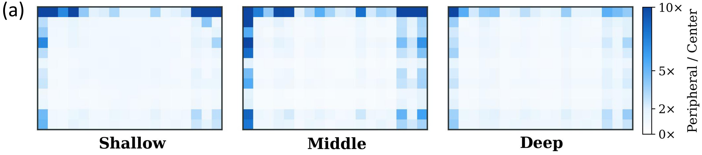

ETS Anchor motion-rich moments
Density-filtered event activity and changes locate informative temporal windows. Refine these anchors for coverage and select the corresponding RGB keyframes.
NeurIPS 2026
1 Tsinghua SIGS 2 Harbin Institute of Technology
3 Tsinghua University 4 The University of Hong Kong
Events tell us where motion happens.
Use that signal to keep the RGB tokens that matter.
80% fewer visual tokens37.62% vs. 36.31% accuracy1.89× model-side speedup
01 / Motivation
Embodied spatial reasoning depends on object boundaries and continuous motion during rapid ego-motion. Fragmented token selection can discard the structure needed to answer spatial questions.

Across 21,920 frames and 28 layers, visual attention favors image borders. The middle-layer group reaches a 5.64× peripheral-to-center ratio, with similar layer-wise profiles across the evaluated datasets (r = 0.897).

02 / Method
Dense video tokens make spatial reasoning expensive. Event Cascade Pruning (ECP) uses high-frequency event activity to select frames, filter regions, and calibrate token ranking. Events determine pruning scores and masks; they are not added to the model as extra event embeddings. The backbone requires no additional training.
Density-filtered event activity and changes locate informative temporal windows. Refine these anchors for coverage and select the corresponding RGB keyframes.
Accumulate events over each visual token’s spatial support, normalize saliency within a frame, and retain motion-salient candidates before attention.
Fuse per-frame ranks of attention and event saliency, retain top-K RGB tokens, and use smaller event weights in deeper layers.
03 / Results
Qwen2.5-VL-7B-Instruct on UrbanVideo-Bench and VSI-Bench with simulated events. Average accuracy covers 13 tasks. The full-token reference is 36.31%.
| Method | 70% tokens | 50% tokens | 20% tokens |
|---|---|---|---|
| FastV | 36.28 | 35.67 | 32.64 |
| DivPrune | 36.16 | 36.77 | 34.40 |
| ECP | 37.78 | 38.16 | 37.62 |
| Metric | Full tokens | ECP |
|---|---|---|
| Latency (s) | 2.10 | 1.11 |
| GFLOPs | 294.6 | 141.9 |
| Memory (MB) | 18,848 | 16,637 |
Model-side inference with prepared RGB–event inputs; offline event synthesis is excluded.
54.58% vs. 51.90%
On ESR-Real at 50% token retention, ECP improves accuracy by 2.68 percentage points over the full-token baseline.
At 20% retention on the public benchmarks, ECP improves over FastV by 4.98 points and DivPrune by 3.22 points.
04 / ESR-Real
ESR-Real pairs synchronized RGB and event streams with 700+ question–answer pairs across six tasks, spanning perception, cognition, and reasoning.
In Scene 2, where is the basketball relative to the tables? (A)
05 / Resources
Paper. arXiv:2605.19506 ↗ · PDF ↗
Code & ESR-Real data. Release in preparation. Public links will be added here when available.
Research group. Xinlei Chen · Tsinghua SIGS ↗
First author. Pengtao Ma ↗
@misc{ma2026eventprune,
title={EventPrune: Cascaded Event-Assisted Token Pruning for
Efficient First-Person Dynamic Spatial Reasoning},
author={Pengtao Ma and Ziliang Zhou and Ciyu Ruan and Haoyang Wang
and Kaiyuan Li and Zihang Gong and Wenhua Ding and Chen Gao
and Jingao Xu and Xinlei Chen},
year={2026},
eprint={2605.19506},
archivePrefix={arXiv},
primaryClass={cs.CV},
url={https://arxiv.org/abs/2605.19506}
}
The arXiv citation retains the preprint title. This page uses the embodied spatial reasoning framing of the camera-ready manuscript.